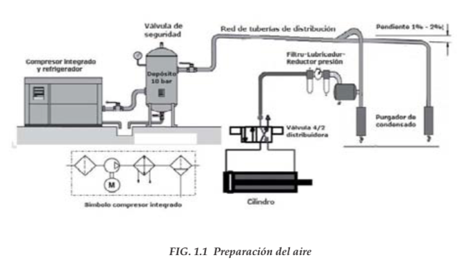
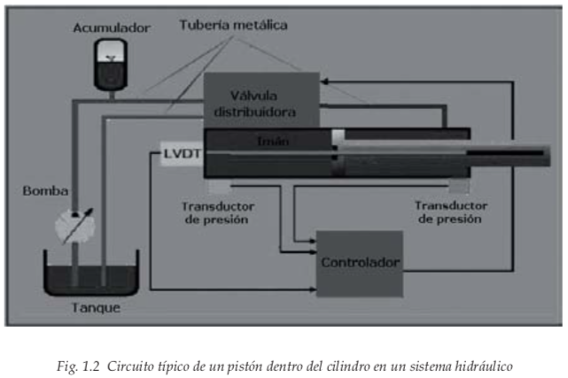
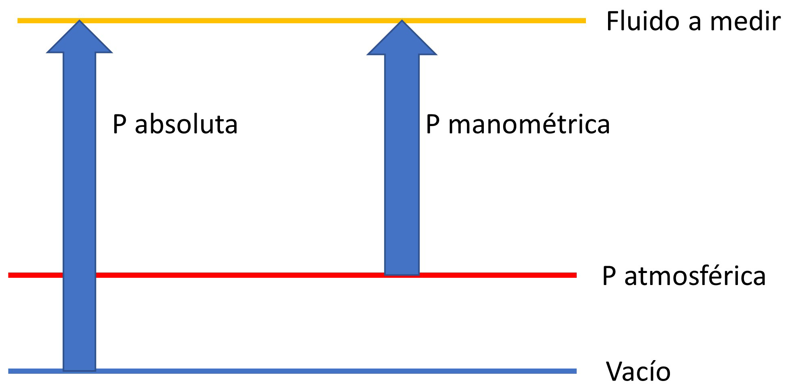
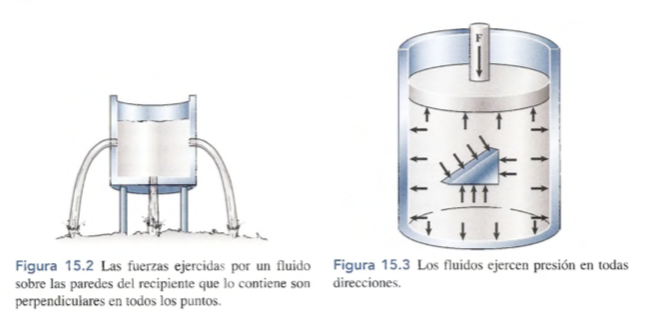
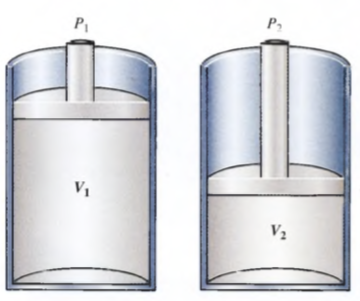
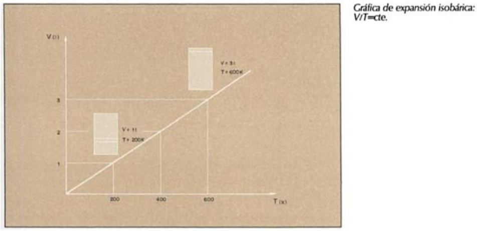

La palabra neumática se refiere al estudio del movimiento del aire.
Los sistemas de aire comprimido proporcionan un movimiento controlado con el empleo de cilindros y motores neumáticos y se aplican en herramientas, válvulas de control y posicionadotes, martillos neumáticos, pistolas para pintar, motores neumáticos, sistemas de empaquetado, elevadores, herramientas de impacto, prensas neumáticas, robots industriales, vibradores, frenos neumáticos, etc.
Las ventajas que presenta el uso de la neumática son el bajo coste de sus componentes, su facilidad de diseño e implementación y el bajo par o la fuerza escasa que puede desarrollar a las bajas presiones con que trabaja (típico 6 bar) lo que constituye un factor de seguridad. Otras características favorables son el riesgo nulo de explosión, su conversión fácil al movimiento giratorio así como al lineal, la posibilidad de transmitir energía a grandes distancias, una construcción y mantenimiento fáciles y la economía en las aplicaciones.
Entre las desventajas figura la imposibilidad de obtener velocidades estables debido a la compresibilidad del aire, los altos costes de la energía neumática y las posibles fugas que reducen el rendimiento.
La neumática precisa de una estación de generación y preparación del aire comprimido formada por un compresor de aire, un depósito, un sistema de preparación del aire (filtro, lubricador y regulador de presión), una red de tuberías para llegar al utilizador y un conjunto de preparación del aire para cada dispositivo neumático individual (figura 1.1).
Los sistemas neumáticos se complementan con los eléctricos y electrónicos lo que les permite obtener un alto grado de sofisticación y flexibilidad. Utilizan válvulas solenoide, señales de realimentación de interruptores magnéticos, sensores e interruptores eléctricos de final de carrera. El PLC (programmable logic controller) les permite programar la lógica de funcionamiento de un cilindro o de un conjunto de cilindros realizando una tarea específica.

En determinadas aplicaciones, tales como en movimientos de aproximación rápido y avance lento, típicos de las fresadoras y rectificadoras, en la sujeción de piezas utilizada en los cortes a alta velocidad sobre materiales duros y en la automatización de procesos de producción, se combinan la neumática y la hidráulica en un circuito oleoneumático, utilizando la parte neumática para el accionamiento y control y la parte hidráulica para el actuador.
a hidráulica utiliza básicamente los fluidos hidráulicos como medios de presión para mover los pistones de los cilindros. En la figura 1.2 se representa el movimiento típico de un pistón dentro del cilindro gracias a la energía proporcionada por un sistema hidráulico formado por una bomba, un depósito y un conjunto de tuberías que llevan el fluido a presión hasta los puntos de utilización.
Dentro de estos sistemas se encuentran los motores hidráulicos con velocidades que abarcan desde 0,5 rpm hasta 10.000 rpm y el par que proporcionan va desde 1 Nm (baja velocidad) hasta 20.000 Nm (alta velocidad).

Los sistemas hidráulicos se aplican típicamente en dispositivos móviles tales como maquinaria de construcción, excavadoras, plataformas elevadoras, aparatos de elevación y transporte, maquinaria para agricultura y simuladores de vuelo.
Sus aplicaciones en dispositivos fijos abarcan la fabricación y montaje de máquinas de todo tipo, líneas transfer, aparatos de elevación y transporte, prensas, máquinas de inyección y moldeo, máquinas de laminación, ascensores y montacargas.
Tienen las siguientes ventajas:
Gran potencia transmitida con pequeños componentes, posicionamiento preciso, arranque con cargas pesadas, movimientos lineales independientes de la carga ya que los líquidos son casi incompresibles y pueden emplearse válvulas de control, operación suave e inversa, buen control y regulación y disipación favorable de calor.
Y entre sus desventajas figuran:
Polución del ambiente con riesgo de incendio y accidentes en el caso de fuga de aceite, sensibilidad a la suciedad, peligro presente debido a las excesivas presiones, dependencia de la temperatura por cambios en la viscosidad.
Análogamente a los sistemas neumáticos, los sistemas hidráulicos se complementan con los eléctricos y electrónicos mediante dispositivos tales como válvulas solenoide, señales de realimentación de interruptores magnéticos, sensores e interruptores eléctricos de final de carrera. Es fácil, en particular en sistemas complejos, acoplarles un PLC (programmable logic controller) que les permite programar la lógica de funcionamiento de varios cilindros.
En determinadas aplicaciones, tales como en movimientos de aproximación rápido y avance lento, típicos de las fresadoras y rectificadoras, en la sujeción de piezas utilizada en los cortes a alta velocidad sobre materiales duros y en la automatización de procesos de producción, se combinan los sistemas neumático, hidráulico y eléctrico en la forma siguiente:
A la fuerza normal por unidad de área se le llama presión.
La presión ejercida de un fluido sobre una superficie - y viserversa - el cociente entre la fuerza y la superficie que recibe su acción. Es decir,
En donde:
Visto la definición deducimos que para aumentar la fuerza que ejerce un fluido tenemos dos opciones.
Un tubo contiene agua bajo una presión manométrica de 400 kPa. Si se cubre un orificio de 4 mm de diámetro en el tubo, con un trozo de cinta adhesiva, ¿Qué fuerza tendrá que ser capaz de resistir la cinta?
Un pistón de 20kg descansa sobre una muestra de gas en un cilindro de 8cm de diámetro. ¿Cuál es la presión manométrica sobre el gas?
TODO: Desarrollar los ejemplos a detalle
TODO: buscar ejercicios
La presión atmosférica al nivel del mar es , o . Debido a que la presión atmosférica participa en gran número de cálculos, con frecuencia se usa una unidad de presión de 1 atmósfera (atm), definida como la presión media que la atmósfera ejerce al nivel del mar, es decir, .
Medida de presión por encima de la presión atmosférica.

Toma como base el 0 absoluto. Se utiliza para realizar cáculos teóricos.
Es la cantidad de fluido en peso o volumen, que atraviesa una superficie en la unidad de tiempo. En neumática se usa habitualmente el volumen por unidad de tiempo.
El caudal viene expresado en o , dependiendo de la magnitud de la que estemos hablando.
En una instalación neumática el caudal es constante, por eso si reducimos la sección en un punto la velocidad tiene que aumentar en ese punto de forma que el caudal se conserve.
La fuerza que ejerce un fluido sobre las paredes de un recipiente que lo contiene siempre actúa en forma perpendicular a esas paredes.
Los fluidos ejercen presión en todas las direcciones.

Cualquier líquido en un recipiente abierto, por ejemplo, está sujeto a la presión atmosférica además de la presión debida a su propio peso. Puesto que el líquido es relativamente incompresible, la presión externa de la atmósfera se trasmite por igual a todo el volumen del líquido. El primero en enunciar este hecho fue el matemático francés Blas Pascal (1623- 1662), y se conoce como ley de Pascal. En general, se enuncia como sigue:
Una presión externa aplicada a un fluido confinado se transmite uniformemente a través del volumen de un líquido.
Este fenómeno nos permite amplificar/reducir fuerzas teniendo como contraprestación una reducción/amplificación de los desplazamientos.
Igualando las presiones tenemos
Como el volumen desplazado es el mismo , Luego:
Siendo S la sección o área del recipiente y l su altura.
Esta ley aplciada a gases perfectos dice que a tempratura constante, la presión absoluta es inversamente porpocional al volumen, O sea:
Siempre que la masa y la temperatura de una mues tra de gas se mantengan constantes, el volumen de dicho gas es inversamente proporcional a su presión absoluta.
Siendo presiones absolutas y volúmnes a esas presiones.

El aire expuesto a la presión atmosferica es comprimido a la séptima para de su volumen. ¿Cuál es la presión si la temperatura se mantiene constante?
Despejando
Recordamos que se va a comprimir a la séptima parte, por lo tanto;
Para la presión 1, tnemos que es la presión atmosférica
La relación entre el volumen de un gas y su temperatura, al pasar de un estado a otro a presión constante.
Ley de Charles
Mientras la masa y la presión de un gas se mantengan cons tantes, el volumen de dicho gas es directamente proporcional a su tempera tura absoluta.
A presión constante, la razón entre el volumen y la temperatura absoluta de un gas se mantiene constante. O lo que es lo mismo, el volumen es directamente proporcional a la temperatura absoluta.
Ley de Gay-Lussac
Si el volumen de una muestra de gas permanece constante, la presión absoluta de dicho gas es directamente proporcional a su tempe ratura absoluta.
TODO: agregar unos ejemplos y ejercicios
El volumen de un gas, a una temperatura y presión dada, es directamnete proporcional al número de moles que contiene, siendo un mol una cantidad de gramos del gas ideal a su peso molecular. Es decir, si n esl número de moles se escribirá:
Pues bien, la combinación de esta ley con las anterioes nos permite formular una importan ecuación llamada ley de los gases ideales, según la cual el volumen de un gas es:
En donde:
La constante de porporcionalidad R, es la constate de os gaese.

De la ley de los gases ideales podemos deducir que si el volumen del gas se mantiene invariable, la presión es directamente porpocional a la temperatura absoluta, o lo que es igual, que la relacioón presión/temperatura es constante.
A esta conclusión también había llegando experimentalme Gay Lussac
TODO: buscar problemas sobre el tema aplicacdo a neumatica, de lo contario se elimina esta parte, o se deja solo por mencionar
TODO: pagina 19 - Neumatica practica de Nicolas
TODO: Neumatica practica pagina 21
TODO: introducción a la neumatica antonio guillen pagina 17
TODO: principios de neumatica e hidraulica pagina 5